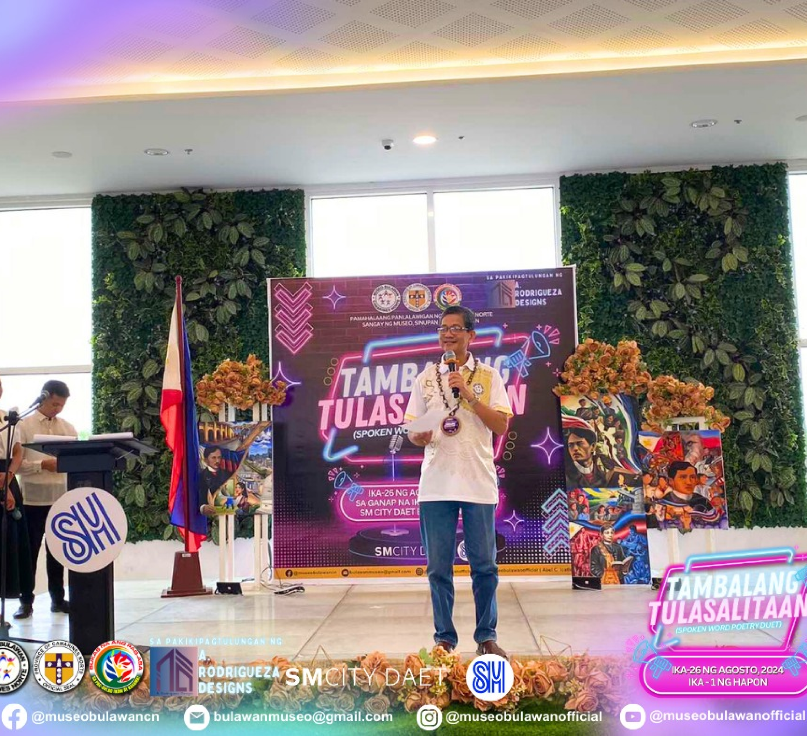
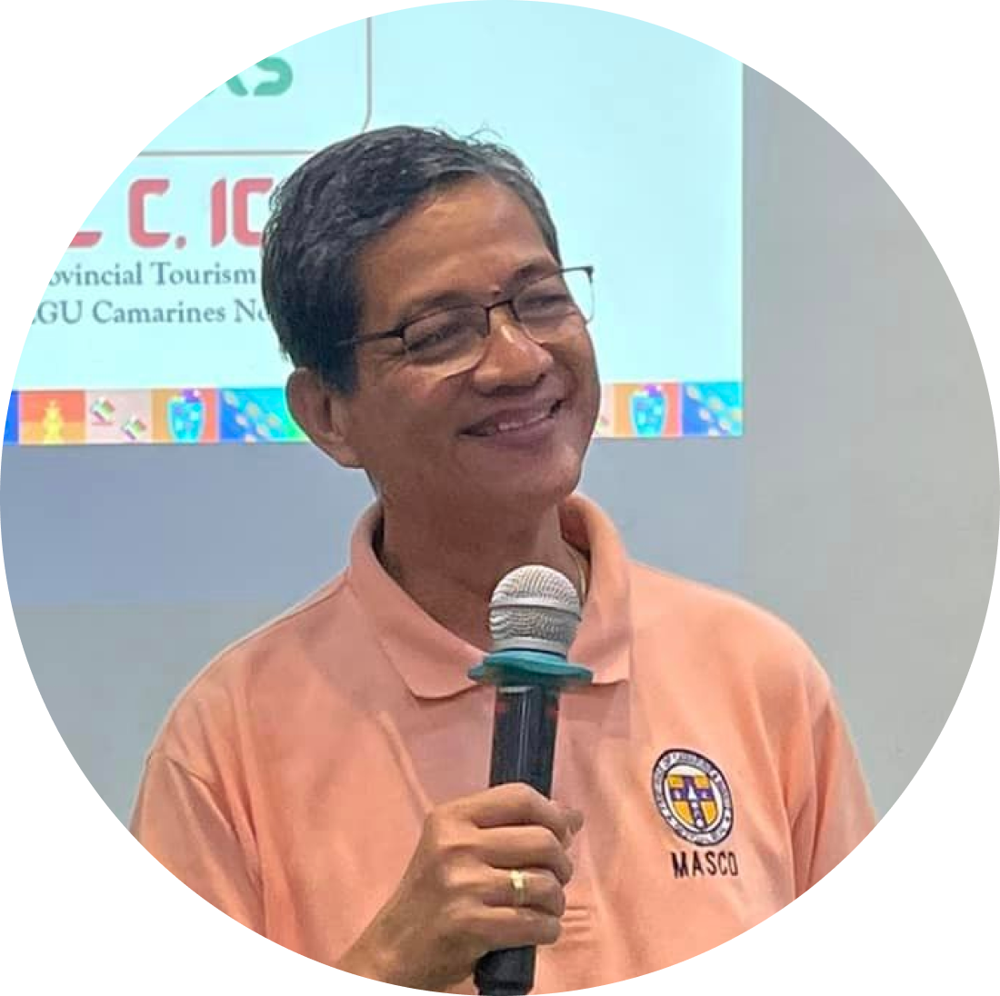
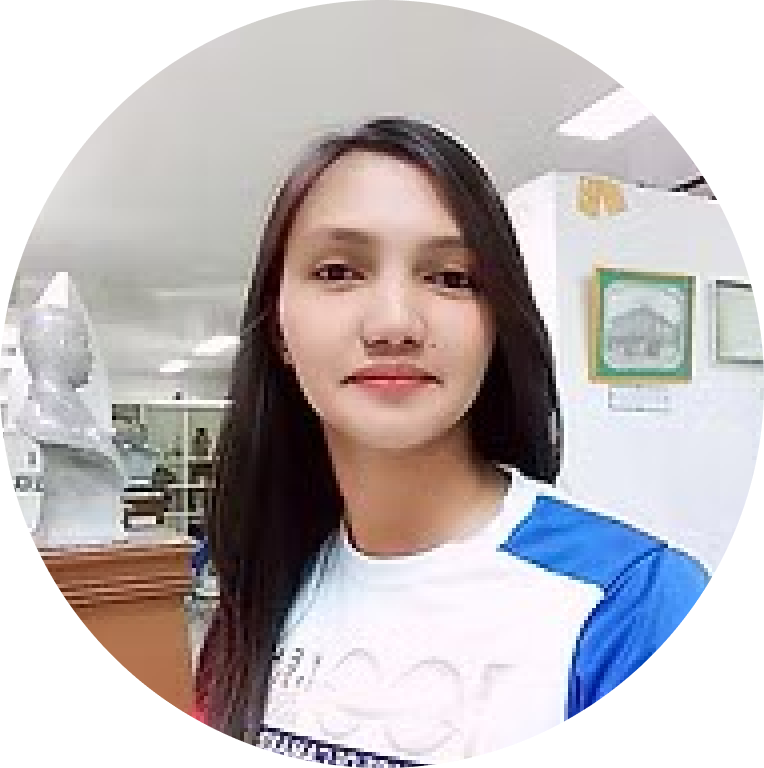
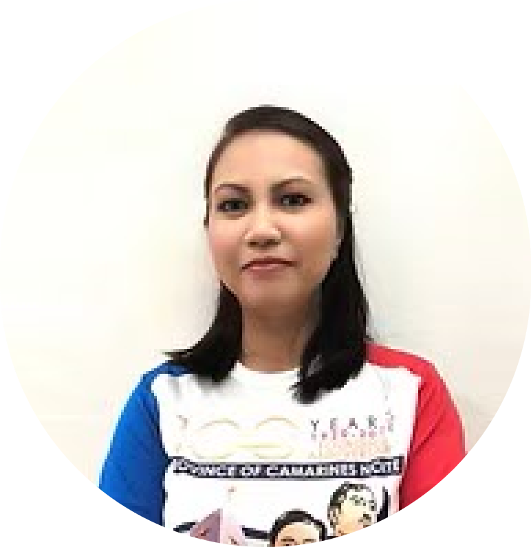

<html lang="en">

</html>

<head>
    <link rel="preconnect" href="https://fonts.googleapis.com">
    <link rel="preconnect" href="https://fonts.gstatic.com" crossorigin>
    <link href="https://fonts.googleapis.com/css2?family=Noto+Sans:ital,wght@0,100..900;1,100..900&display=swap"
        rel="stylesheet">
    <link href="https://cdn.jsdelivr.net/npm/bootstrap@5.3.3/dist/css/bootstrap.min.css" rel="stylesheet"
        integrity="sha384-QWTKZyjpPEjISv5WaRU9OFeRpok6YctnYmDr5pNlyT2bRjXh0JMhjY6hW+ALEwIH" crossorigin="anonymous">
    <meta charset="UTF-8">
    <meta name="viewport" content="width=device-width, initial-scale=1.0">
    <title>Museo Bulawan Collection Page</title>
    <link href="collectionstyle.css" rel="stylesheet">
    <script src="https://cdn.jsdelivr.net/npm/bootstrap@5.3.3/dist/js/bootstrap.bundle.min.js"
        integrity="sha384-YvpcrYf0tY3lHB60NNkmXc5s9fDVZLESaAA55NDzOxhy9GkcIdslK1eN7N6jIeHz"
        crossorigin="anonymous"></script>
    <link rel="stylesheet" href="style.css">

    <!-- font Hina Mincho-->
    <link rel="preconnect" href="https://fonts.googleapis.com">
    <link rel="preconnect" href="https://fonts.gstatic.com" crossorigin>
    <link href="https://fonts.googleapis.com/css2?family=Hina+Mincho&display=swap" rel="stylesheet">
    <link rel="stylesheet" href="https://cdnjs.cloudflare.com/ajax/libs/font-awesome/6.0.0-beta3/css/all.min.css">
    <link href="https://cdn.jsdelivr.net/npm/bootstrap@5.3.0-alpha3/dist/css/bootstrap.min.css" rel="stylesheet">
    <script src="./about.js"></script>

    
</head>

<body>

    <!-- header start -->

    <div class="container-fluid mb-2 stickycon" id="stickyNav">
        <nav class="navbar navbar-expand-lg navbar-dark p-1">
            <p id="texttime" class="text-light my-auto ms-lg-5 ms-sm-1 ms-md-3">
                Open Daily 9:00am-5:00pm, Monday-Friday, Close During Holidays
            </p>

            <button class="navbar-toggler" type="button" data-bs-toggle="collapse" data-bs-target="#morebtn"
                aria-controls="navbarNavAltMarkup" aria-expanded="false" aria-label="Toggle navigation">
                <span class="fa-solid fa-caret-down"></span>
            </button>

            <div class="collapse navbar-collapse" id="morebtn">
                <ul class="navbar-nav ms-auto me-lg-5 me-sm-1 me-md-3" id="navLinks">
                    <li class="navupper nav-item">
                        <a class="nav-link" href="../Home/index.html">Home</a>
                    </li>
                    <li class="navupper nav-item">
                        <a class="nav-link" href="../News and Events/naeindex.html">News and Events</a>
                    </li>
                    <li class="navupper nav-item">
                        <a class="nav-link" href="../museum_mapguide/index.html">Museum Map</a>
                    </li>
                    <li class="navupper nav-item">
                        <a class="nav-link" href="../About Us/about.html">About Us</a>
                    </li>
                    <li class="navupper nav-item">
                        <a class="nav-link" href="../Appointment Form/appointindex.html">Visit Us</a>
                    </li>
                    <li class="navupper nav-item">
                        <a class="nav-link" href="../admin_login/login.html">Log In</a>
                    </li>
                </ul>
            </div>
        </nav>
    </div>


    <div class="container-fluid mx-auto">
        <nav class="navbar navbar-expand-lg navbar-light bg-white">
            <div class="d-flex flex-row align-items-center ms-lg-5">
                
                <div class="vr border border-3 mx-3 border-dark opacity-100" style="height: 85px;"></div>
                <a class="navbar-brand fw-bold p-0 fs-3 text-dark text-start" href="../About Us/about.html">
                    MUSEO <br> BULAWAN
                </a>
            </div>
            <button class="navbar-toggler" type="button" data-bs-toggle="collapse" data-bs-target="#burgerbtn"
                aria-controls="navbarNavAltMarkup" aria-expanded="false" aria-label="Toggle navigation">
                <span class="navbar-toggler-icon"></span>
            </button>

            <div class="collapse navbar-collapse" id="burgerbtn">
                <ul id="list" class="navbar-nav fs-5 gap-3 ms-md-auto me-md-5 ms-sm-0" style="">
                    <li class="nav-item">
                        <a class="nav-link text-dark" href="../Home/index.html">Home</a>
                    </li>
                    <li class="nav-item">
                        <a class="nav-link text-dark" href="../News and Events/naeindex.html">News and Events</a>
                    </li>
                    <li class="nav-item">
                        <a class="nav-link text-dark" href="../museum_mapguide/index.html">Museum Map</a>
                    </li>
                    <li class="nav-item">
                        <a class="nav-link text-dark" href="../About Us/about.html">About Us</a>
                    </li>
                </ul>
            </div>
        </nav>
        <hr class="border border-1 border-dark opacity-100 mx-md-2 mx-sm-3">
    </div>


    <div class="container-fluid ">
        <div class="top-about row p-5 justify-content-center gap-3">
            <div class="col-lg-4 col-md-5">
                <h4 style="text-align:justify;">
                    The Museo Bulawan, also known as the Community Museum of Camarines Norte, embodies the rich cultural
                    and historical essence of the province. Its origins trace back to 1995, when the construction of a
                    new neo-classical provincial capitol building provided a fitting backdrop for the establishment of a
                    museum. The Greco-Roman architecture of the building inspired a vision of timeless grandeur, making
                    it an ideal setting to house artifacts and exhibits that celebrate the province's heritage.
                </h4>
                <br>
                
            </div>
            <div class="col-md-6 col-md-5">
                <h1 style="text-align: justify;">
                    "A museum is a bridge that connects the past to the present, inspiring the future."
                </h1>
                <br>
                <h3>
                    Humble Beginnings
                </h3>
                <br>
                <h5 style="text-align: justify;">
                    Initially, the museum was situated in a modest space at the center of the capitol building's
                    frontage, directly facing the main entrance. Despite its limited size, this initial venue served as
                    a hub for various periodic exhibits and activities. It became an effective platform for the
                    provincial government to foster cultural awareness and education among the youth and the community
                    at large.
                </h5>
                <br>
                <h5 style="text-align: justify"> Through collaborations with national organizations such as the National
                    Commission for Culture and
                    the Arts NCCA, the National Museum, and the National Historical Institute, the museum hosted
                    numerous events that sparked a growing interest in local history and cultural preservation. These
                    partnerships deepened the communitys sense of identity and strengthened their connection to the
                    national narrative. </p>
                </h5>
                <br>
                <h5 style="text-align: justify;">
                    This initial phase of the museum also served as a testament to the community's commitment to
                    preserving their heritage despite spatial limitations. The intimate setting encouraged meaningful
                    interactions between visitors and exhibits, fostering a deeper appreciation for the artifacts on
                    display. Local artists, historians, and cultural advocates found a welcoming space to share their
                    work and knowledge, further enriching the museum's offerings. These early efforts laid the
                    groundwork for a vibrant cultural hub that would eventually grow into a larger and more
                    comprehensive institution, embodying the community's dedication to celebrating and safeguarding
                    their shared history.
                </h5>
            </div>
            <div class="col-10">
                <h2>“Heritage is not what we inherit from the past; it is what we preserve for the future.”</h2>
            </div>
            <div class="col-md-5">
                
            </div>
            <div class="col-md-5">
                <h3>
                    Expansion and Transformation
                </h3>
                <h5>
                    The new location facilitated significant advancements in museum management, including systematic
                    techniques in documentation, research, preservation, and exhibition. Enhanced marketing and
                    promotional efforts further broadened the museum's reach, attracting a diverse audience of local
                    residents and travelers.
                </h5>
                <h5>
                    <span style="font-size: 5em;">O</span>ver time, the museum's popularity and collections grew,
                    outstripping the capacity of its original location. The year 2000 marked a pivotal moment in its
                    history when the museum was relocated to a larger building adjacent to the provincial capitol. This
                    move addressed the need for a more spacious venue, enabling improved collection displays and a more
                    comfortable experience for visitors.
                    </<h5>
            </div>
            <div class="col-md-5">
                <h3>
                    Museo Bulawan: A Beacon of Cultural Wealth
                </h3>
                <h5>
                    The museum's name, Museo Bulawan—translated as “Golden Museum”—reflects Camarines Norte's
                    distinction as a province historically linked to gold mining. This golden legacy resonates in the
                    museum's exhibits and collections, which include:
                </h5>
                <ul style="font-size: 1.3em;">
                    <li>Numismatics: An extensive collection of coins and currencies.</li>
                    <li>Portraits of Governors: A gallery honoring the province's leaders.</li>
                    <li>Historical Panels: Computer-generated displays illustrating significant moments in local and
                        national history.</li>
                    <li>Local Heroes Exhibit: Tributes to the individuals who shaped the province's story.</li>
                    <li>Tourism Showcases: Presentations highlighting the scenic beauty and cultural richness of
                        Camarines Norte.</li>
                </ul>
            </div>
            <div class="col-md-5">
                
            </div>
            <div class="col-md-6">
                <h2>In addition to these exhibits, the museum hosts periodic events and activities designed to engage
                    children and adults alike, further solidifying its role as a cornerstone of cultural education and
                    community engagement.</h2>
            </div>
            <div class="col-md-4">
                <h4>
                    A Living Heritage
                </h4>
                <h5>Today, Museo Bulawan stands not just as a repository of artifacts but as a dynamic institution that
                    bridges the past and present. It continues to inspire pride and curiosity among its visitors while
                    contributing to the province's tourism appeal. As it moves forward, the museum remains committed to
                    its mission of preserving and showcasing the golden heritage of Camarines Norte, ensuring that
                    future generations can connect with their roots and celebrate their identity.</h5>
            </div>
        </div>
    </div>


    <div class="d-flex justify-content-center align-items-center text-center bg-image my-3"
    style="height: 70vh; background-image: url('../source/wallpic.png'); background-size: cover; background-position: center; color: white; font-family: Hind Kochi; padding: 1em;">
    <div style="max-width: 90%; padding: 1em; background: rgba(0, 0, 0, 0.5); border-radius: 8px;">
        <h1 class="fw-bold mb-3"
            style="text-shadow: 2px 2px 4px rgba(0, 0, 0, 0.6); font-size: clamp(1.5rem, 4vw, 3rem);">
            Vision
        </h1>
        <p class="fs-4"
            style="text-shadow: 1px 1px 3px rgba(0, 0, 0, 0.5); font-size: clamp(1rem, 2.5vw, 1.5rem);">
            Museo Bulawan is the leading and the most viewer-friendly community museum that serves as the nerve
            center for education and communication of the rich cultural, artistic, and natural heritage and history
            of Camarines Norte and the ultimate medium for preservation and exhibition of significant objects that
            strengthen the values of the people and deepen their patriotism and sense of identity.
        </p>
    </div>
</div>


    <div class="container-fluid my-5" style="font-family: Hind Kochi">
        <div class="text-center">
            <h1 class="fw-bold mb-4">Mission</h1>
        </div>
        <div class="row justify-content-center">
            <div class="col-lg-10 text-center fs-4">
                <p>
                    Collect, research, conserve, exhibit and disseminate knowledge of significant past so as to enhance
                    social life and sustain the efforts to social transformation and development.
                </p>
                <p>
                    Educate, entertain and excite the various publics through systematic preservation, protection,
                    promotion and publication of the material culture of the society.
                </p>
                <p>
                    Sustain the process of social progress through the communicative function of the museum towards
                    inculcation of values, greater appreciation and understanding of arts and culture as well as
                    production of relevant information that boosts the pride of place of the people and their sense of
                    national purpose.
                </p>
            </div>
        </div>
    </div>

    <div style="background-color: #1C1B19; padding-top: 5rem; padding-bottom: 5rem; font-family: Hind Kochi;">
        <div class="container">
            <div class="text-center mb-4">
                <h1 class="display-5 fw-bold text-white">A Message From The Museum Curator's</h1>
                <h2 class="text-warning">Mr. Abel C. Icatlo</h2>
            </div>

            <div class="text-center mb-5">
                
            </div>

            <div class="row justify-content-center text-white">
                <div class="col-lg-10">
                    <p class="text-center">
                        Through the pages of history we saw the searing revolutionary fire of the nationalist heroes of
                        Camarines Norte who convulsed in a determined uprising in Daet in April 1898 and later
                        established
                        the First Rizal Monument in December of that year. The seeds of freedom sown by the local heroes
                        of
                        this Province engendered an awakened nation and a people who were wont to pay the price of
                        freedom.
                        Through the wars and dictatorship, the people of Camarines Norte seasoned the challenges with
                        perseverance and fortitude.
                    </p>

                    <p class="text-center">
                        Museo Bulawan, which is a community museum, attempts to capture the rich panorama of struggle of
                        the Local people. History aside, Museo Bulawan, showcases as well the exquisite treasure of this
                        province which is gold. Actually, bulawan is a Filipino word for gold and it is said that
                        Camarines
                        Norte is a province that sits in a mound of gold.
                    </p>

                    <p class="text-center">
                        Not only does the Provincial Government of Camarines Norte mind itself on the material
                        development
                        of the people but more so, it strives to zero in on the software of social and economic
                        development
                        which is the cultural, ethical and moral upliftment of the people. And there is no other way by
                        which this can be effectively done except through the powerful tool of culture and arts.
                    </p>

                    <p class="text-center">
                        Hence, genuine socio-economic progress becomes possible through the developmental firepower of
                        culture clarified and inculcated in the minds and hearts of the people. Museo Bulawan is
                        dynamically
                        spearheading this thrust on cultural development being at the forefront of heritage, cultural
                        and
                        artistic endeavors of the local government. And we hold the conviction that cultural development
                        is
                        the ultimate driving force to continually rekindle and spread courage, resiliency, integrity,
                        moral
                        strength and patriotic and nationalistic fervor.
                    </p>
                </div>
            </div>
        </div>
    </div>

    <div>
        
    </div>


    <div class="container-fluid my-5" style="font-family: Hind Kochi">
        <div class="text-center">
            <h1 class="fw-bold mb-4">Key People</h1>
            <h2 class="mb-2"> Pure Professionalism</h2>
        </div>
        <div class="row justify-content-center">
            <div class="col-lg-10 text-center fs-4">
                <p>
                    Our dedicated team of experienced professionals are always on the ball, utilizing their unique
                    skills and passion to move the work of Museum. We’re always pushing ourselves to stay ahead of the
                    curve and striving to perfect our programs. Meet some of our incredible employees below.
                </p>

            </div>
        </div>
    </div>


    <div id="teamCarousel" class="carousel slide" data-bs-ride="carousel" data-bs-interval="3000">
        <div class="carousel-inner">
            <!-- Item 1 -->
            <div class="carousel-item active">
                <div class="d-flex flex-column align-items-center text-center">
                    
                    <h5>Abel C. Icatlo</h5>
                    <p>Museum Curator</p>
                </div>
            </div>

            <div class="carousel-item text-center">
                
                <h5>Andrea Calma</h5>
                <p>Museum Staff</p>
            </div>
            <!-- Member 2 -->
            <div class="carousel-item text-center">
                
                <h5>Toto Ong</h5>
                <p>Museum Staff</p>
            </div>
            <!-- Member 3 -->
            <div class="carousel-item text-center">
                
                <h5>Leni Rodriguez</h5>
                <p>Museum Staff</p>
            </div>
            <!-- Member 4 -->
            <div class="carousel-item text-center">
                
                <h5>Andex Bermundo</h5>
                <p>Museum Staff</p>
            </div>
            <!-- Member 5 -->
            <div class="carousel-item text-center">
                
                <h5>Katherine Dabocol</h5>
                <p>Administrative Assistant II</p>
            </div>
            <!-- Member 6 -->
            <div class="carousel-item text-center">
                
                <h5>Andrew Necio</h5>
                <p>Administrative Aide II</p>
            </div>
            <!-- Member 7 -->
            <div class="carousel-item text-center">
                
                <h5>Glenda Amaranto</h5>
                <p>Museum Staff</p>
            </div>
            <!-- Member 8 -->
            <div class="carousel-item text-center">
                
                <h5>Jeah Sayno</h5>
                <p>Museum Staff</p>
            </div>
            <!-- Member 9 -->
            <div class="carousel-item text-center">
                
                <h5>Vanessa Gunda</h5>
                <p>Museum Staff</p>
            </div>
            <!-- Member 10 -->
            <div class="carousel-item text-center">
                
                <h5>Mhiles Bracero</h5>
                <p>Museum Staff</p>
            </div>
            <!-- Repeat for all members -->
        </div>
        <!-- Carousel controls -->
        <button class="carousel-control-prev" type="button" data-bs-target="#teamCarousel" data-bs-slide="prev">
            <span class="carousel-control-prev-icon" aria-hidden="true"></span>
            <span class="visually-hidden">Previous</span>
        </button>
        <button class="carousel-control-next" type="button" data-bs-target="#teamCarousel" data-bs-slide="next">
            <span class="carousel-control-next-icon" aria-hidden="true"></span>
            <span class="visually-hidden">Next</span>
        </button>
    </div>

    <!-- start of footer -->
    <div class="wrapper pt-4 mb-0">

        


        <hr class="border border-1 border-light opacity-100 mx-4">

        <div class="side-footer mx-5 mb-0">
            <div class="row d-flex justify-content-between">
                <div class="col-lg-7 col-sm-12">
                    <div class="museo-bulawan-cmp d-flex justify-content-start mb-3">
                        
                        <h2>Museo Bulawan</h2>
                    </div>
                    <p class="lead">Helping us raise awareness regarding Camnortenos identity is crucial, and
                        your
                        support can make a significant difference.</p>
                    <div class="container-fluid d-flex flex-wrap p-0 pb-4">
                        <p class="me-3">We gratefully accept donations or just lending of your artifact will greatly
                            help us.
                        </p>
                        <a href="../Support Page/support.html" class="btn btn-light btn-lg" role="button">Support Us</a>

                    </div>
                </div>

                <div class="col-lg-2 col-sm-12 mb-4">
                    <nav class="navbar">
                        <ul class="navbar-nav text-start navbar-dark">
                            <li class="nav-item">
                                <a class="nav-link" href="../Appointment Form/appointindex.html">Visit Us</a>
                            </li>
                            <li class="nav-item">
                                <a class="nav-link" href="../About Us/about.html">About Us</a>
                            </li>
                            <li class="nav-item">
                                <a class="nav-link" href="../About Us/about.html">Contact Us</a>
                            </li>
                            <li class="nav-item">
                                <a class="nav-link" href="../museum_mapguide/index.html">Map View</a>
                            </li>
                        </ul>
                    </nav>
                </div>

                <div class="col-lg-3 col-sm-12">
                    <h5>Opening Hours</h5>
                    <p>Camarines Norte Provincial Capitol Grounds,
                        Daet Philippines</p>
                    <p>Open Daily 9:00am-5:00pm,
                        Monday- Friday,</p>
                </div>

            </div>
        </div>
    </div>

    <!-- end of footer -->

    </div>

</body>


</html>